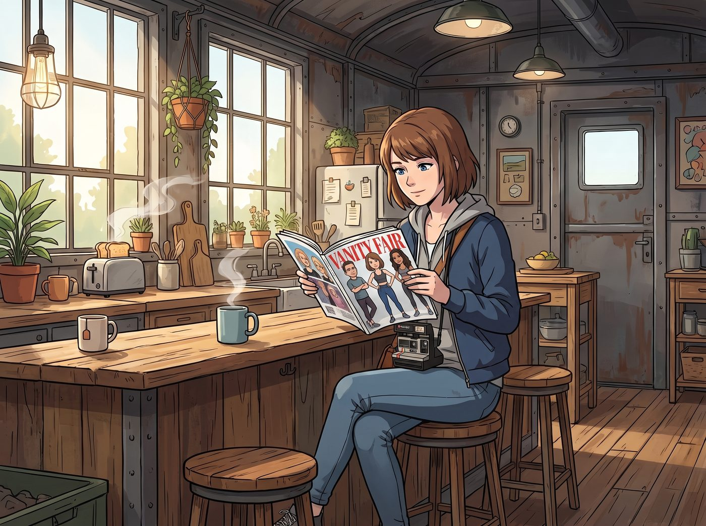
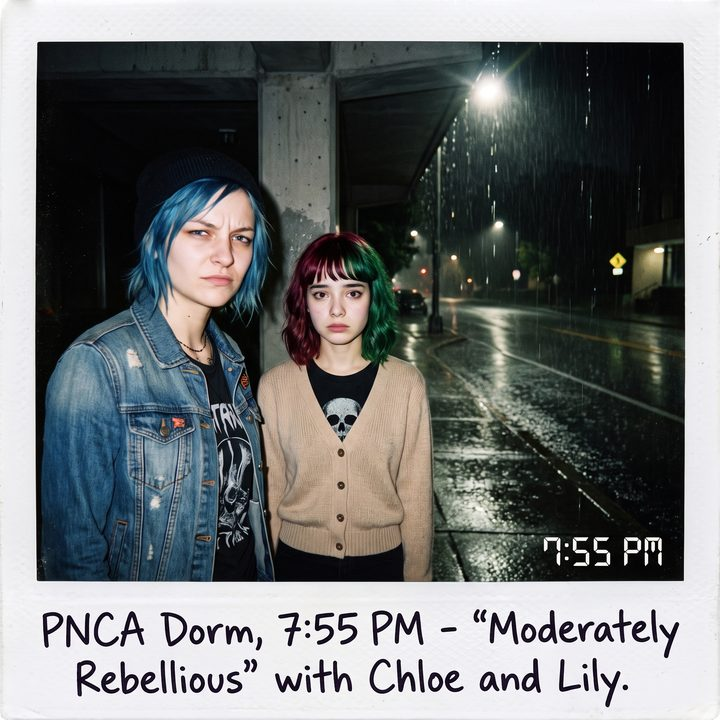

瑜伽褲與聖誕樹


一、瑜伽褲
隔天早晨，二號車廂的公共區飄著烤麵包的香氣。Max 坐在吧台前，手裡翻著一本從鎮上超市順手買來的《名利場》雜誌。雜誌的跨頁專題是一群穿著 Lululemon 瑜伽褲的矽谷新貴與好萊塢明星，標題用粗體字寫著：「大流行時期的居家新制服」。
「一百二十美金。」Max 咬了一口塗滿奶油的吐司，指著雜誌上那條緊繃的黑色萊卡纖維褲子，「就為了買一條在視訊會議下半身穿的彈性緊身褲。這個世界在疫情這幾年是不是徹底瘋了？」
剛從車底鑽出來、滿手油污的 Chloe 走進廚房，瞥了一眼雜誌，發出一聲極度嫌棄的冷哼。
「這就是一塊把駱駝趾勒得一覽無遺的塑膠布。」Chloe 從冰箱裡抽出兩顆雞蛋，「我花二十塊美金在二手店買的工裝褲，不僅能裝下三把扳手，還能讓我在地上打滾。花一百二買這個的人，腦子裡裝的絕對都是燕麥奶。」
正端著一杯黑咖啡從套房走出來的 Victoria，罕見地對 Chloe 的粗俗發言表示了贊同。她甚至停下腳步，用一種看著某種視覺污染的眼神，嫌惡地盯著雜誌上的照片。
「這不是瘋了，Max，這是中產階級在隔離期間最精準的『智商稅』。」Victoria 優雅地在單人沙發上坐下，「從老錢（Old Money）的著裝禮儀來看，穿著瑜伽褲出現在健身房以外的任何公共場合——無論是去買咖啡還是遛狗——都是一種無可救藥的粗鄙。這就跟穿著睡衣參加晚宴一樣，是對社交邊界的嚴重冒犯。」
Victoria 輕輕攪拌著咖啡，語氣裡透著絕對的階級傲慢：「真正的老錢，打獵時穿粗花呢，居家時穿蘇格蘭羊絨，晚宴穿高定。我們不需要把『我很健康、我有時間運動』這件事穿在身上到處昭告天下。因為我們的整個生活方式本身就是休閒（Leisure）。而那些把 Lululemon 當成日常制服的中產階級，本質上是因為他們的休閒時間太過匱乏，所以必須靠著一條印著小 Logo 的緊身褲，來向外界『表演』自己的自律和從容。」
「非常精準的階級消費心理學分析。」
Lily 坐在工作站前，一邊敲擊著鍵盤更新營地的物資清單，一邊用她那毫無起伏的軟糯聲音加入了討論。作為團隊裡最懂得看穿商業邏輯的大腦，她甚至不需要查閱報表，那些數據早就印在她的腦子裡。
「如果我們把視角從美學切換到商業邏輯，這家公司的財務模型堪稱教科書級別的完美。它的毛利率常年維持在驚人的高位。他們沒有花天價去請好萊塢明星代言，而是把當地的瑜伽教練發展成『品牌大使』。這在行政和行銷成本上是極度高效的。他們賣的根本不是尼龍和萊卡，他們賣的是一種名為『正念（Mindfulness）』和『社群歸屬感』的世俗宗教。大流行期間，人們被困在家裡，極度渴望社群連結和健康焦慮的出口，Lululemon 就是那個精準收割這種焦慮的莊家。」
「所以，」Max 眨了眨眼，試圖理清這其中的邏輯，「Victoria 覺得這牌子很 Low，而 Lily 覺得它是一個偉大的商業騙局？」
「不，Max。」Victoria 放下咖啡杯，嘴角勾起一抹屬於資本家的冷酷微笑，「我只說穿著它出門很 Low。但在我的投資組合裡，它是一家非常優秀的成長型消費股。我在它股價剛起飛的時候就建倉了。因為我具備資本邏輯，我深知永遠不要低估中產階級為了緩解焦慮而花錢的愚蠢程度。老錢或許看不起瑜伽褲，但老錢絕對看得起那驚人的利潤率。」
Chloe 翻了個巨大的白眼，把煎好的雞蛋粗暴地倒進盤子裡：「這就是我討厭你們這些資本家的原因。一邊嫌棄這東西辣眼睛，一邊靠它賺得盆滿缽滿。」
「這叫資本的客觀性，Chloe。」Victoria 揚起下巴，「就像妳昨天嘲笑我買不到法蘭絨，但我今早依然能用投資瑜伽褲賺來的分紅，付清這節車廂下半年的星鏈網路費。妳可以繼續穿妳那條二十塊的破爛工裝褲，但我建議妳對我的投資眼光保持起碼的尊重。」
「是是是，感謝女皇陛下的恩賜。」Chloe 嬉皮笑臉地端著盤子走到 Max 身邊，一屁股擠進同一個懶骨頭裡，順手把 Max 手裡的雜誌合上，扔到一邊。
「其實仔細想想，」Max 靠在 Chloe 結實的肩膀上，看著眼前這幅充滿煙火氣的畫面，輕輕笑了起來，「我們這節車廂，才是最不符合 Lululemon 目標客群的地方。我們沒有身材焦慮，不追求中產階級的精緻，每天最大的運動量就是 Chloe 和 Victoria 為了誰該去倒垃圾而鬥嘴。」
「因為我們有彼此就夠了。」Chloe 咬了一大口煎蛋，含糊不清地說道，「不需要一條一百二的褲子來告訴別人我們過得有多好。」
Lily 在螢幕前滿意地推了推眼鏡。在她的風險評估矩陣裡，「中產階級消費陷阱」對二號車廂的威脅指數，已經被永久標記為零。而 Victoria 則假裝沒聽到 Chloe 那句肉麻的告白，只是默默喝了一口咖啡，心安理得地繼續做她那個一邊嫌棄瑜伽褲、一邊靠瑜伽褲賺錢的優雅老錢。
二、優衣庫特價款
「說到中產階級的消費陷阱，」Victoria 放下咖啡杯，目光緩緩轉向坐在工作站前的 Lily，從上到下打量了一遍，「我們這裡倒是有一位，完全免疫的。」
Lily 今天穿的，依然是那件米色的 V 領針織衫，和一條深藍色的直筒裙。跟昨天一樣，跟前天一樣，大概也跟明天一樣。
「從我第一次在波特蘭那間 Loft 的沙發上看到妳那天起，我就說過了，」Victoria 嘆了一口氣，「妳看起來就像一個優衣庫特價區的 NPC。」
「謝謝學姐。」Lily 頭也沒抬，繼續敲著鍵盤，「這件針織衫十九塊九，一模一樣的我有五件。每天早上，我不需要花任何一秒鐘去決定要穿什麼。」
「那叫沒品味。」
「那叫省下來的決策額度。」Lily 平靜地說，「我每天要決定的事情已經夠多了。至少早上這一件，我可以不用想。」
Victoria 張了張嘴，竟然找不到什麼漂亮的話來反駁。
三、聖誕樹
但是，咖啡因終於在 Victoria 的血液裡發揮了作用。
她的眼睛危險地瞇了起來。
「等等。」她站起身，端著咖啡繞到 Lily 身後，用一種抓到把柄的得勝姿態，指著 Lily 的頭頂，「妳說妳的衣服是為了不引人注目、不用動腦，對吧？」
Lily 的手指停在了鍵盤上。
「那妳怎麼解釋這顆頭？！」
Lily 那頭齊肩的短髮，從正中間一分為二：一半是櫻桃紅，一半是森林綠。在暖黃色的燈光下，兩種顏色鮮豔得像是剛染上去的。
「妳那身衣服確實像個無聊的稅務局實習生，」Victoria 得意地揚起下巴，「但妳的腦袋，看起來就像一棵被龐克搖滾閃電劈中的聖誕樹！妳的『不用想』理論，根本就不成立！」
沙發上的 Max 忍不住笑了出來。她從茶几底下的寶麗來相冊裡翻了幾頁，抽出一張邊緣有些泛黃的照片，遞了過去。
照片上是 PNCA 宿舍的門口，底部的留白處用麥克筆寫著：「適度叛逆 v2.0」。
照片裡，Chloe 穿著牛仔夾克，叼著菸，一臉不耐煩地對著鏡頭；站在她旁邊的 Lily，剛滿十八歲，頂著一頭明顯是自己在浴室裡染、邊緣還有點不均勻的紅綠陰陽頭，米色針織衫裡面，生硬地內搭著一件 Chloe 借給她的黑色骷髏 T 恤，整個人僵得像一根電線桿。
「那是她認識我們之後的第三個禮拜。」Max 笑著說，「她穿得太像教育局派來查帳的審計員了，Chloe 看不下去，硬拉著她去藥妝店買了兩盒最便宜的染髮劑。」
「她在浴室裡抖了整整半個小時，」Chloe 靠在 Max 肩膀上，咧嘴大笑，「一邊抹一邊唸，說這樣做違反了宿舍的衛生管理條例第幾條第幾款。」
Victoria 低頭看著那張照片，又抬頭看了看 Lily 那顆鮮豔的腦袋，嘴角慢慢勾起一抹勝利的微笑。
「所以，」她把照片輕輕拍在桌上，「這根本不是什麼行政理論。妳只是當年被 Chloe 拐去染了頭髮，然後一直懶得洗掉而已。承認吧，Lily。我扳回一城了。」
四、補色
Lily 沒有馬上回答。
她低頭看著桌上那張照片，看了很久。
「……不是懶得洗掉，學姐。」她終於開口，聲音很輕，「頭髮會長，顏色也會褪。如果放著不管，三個月之後，它就會變回原本的黑色。」
Victoria 愣了一下。
「所以我每隔六個禮拜，就會補一次色。」Lily 推了推圓框眼鏡，「同一個牌子，同一個色號，鎮上那家藥妝店最便宜的那一種。」
車廂裡安靜了下來。
「為什麼？」Victoria 問。這一次，她的語氣裡沒有任何嘲諷。
Lily 想了想。
「因為那是我第一次，被人拉著去做一件不合規的事。」她說，「那天晚上我嚇得半死，覺得自己在犯罪。但 Chloe 學姐一邊罵我一邊替我抹染髮劑，Max 學姐在旁邊笑到連照片都拍不穩。那是我第一次覺得，就算做錯了一件小事，也不會有人因此不要我。」
她摸了摸自己那縷紅色的髮尾。
「我不想讓它褪回去。」
Victoria 張了張嘴，那句準備好的「我贏了」，卡在了喉嚨裡。
她確實贏了。Lily 承認了，那顆頭跟任何行政理論都沒有關係。但她贏完之後，竟然一個字都說不出來。
「……幹嘛啦。」Chloe 抓了抓頭，假裝要去倒咖啡，起身的時候卻順手揉亂了 Lily 的頭髮，「下次要補色的時候，記得叫我。妳自己染，後腦勺那塊每次都塗不均勻。」
「我知道。」Lily 乖巧地說，「所以上次和上上次，我都叫您了。」
「……喔，對。」
Max 舉起寶麗來，對著那顆紅綠相間、被 Chloe 揉得一團亂的腦袋，按下了快門。
「咔嚓。」
那張新的照片，後來被她貼在了那張「適度叛逆 v2.0」的旁邊。中間隔了好幾年，同一顆頭，顏色一點都沒有褪。